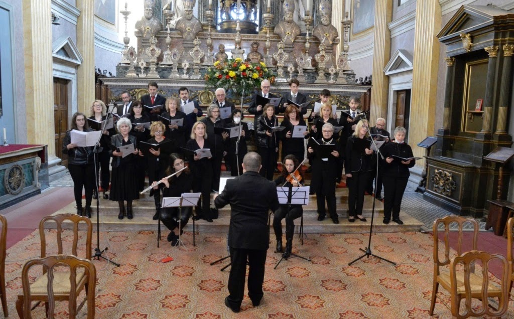
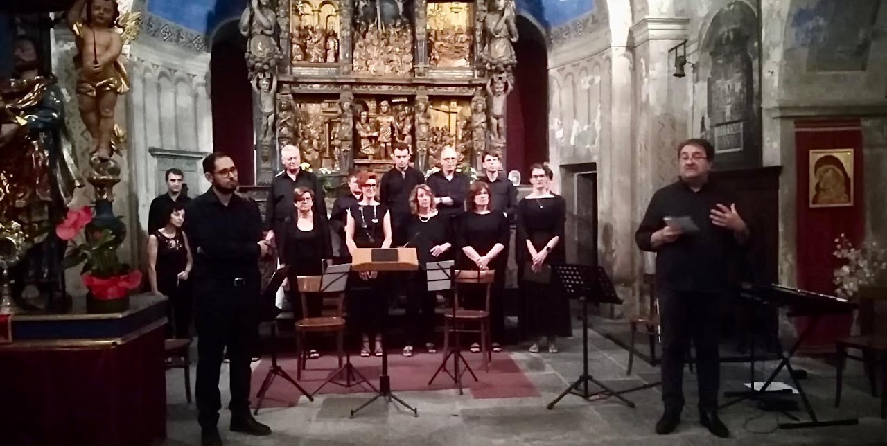
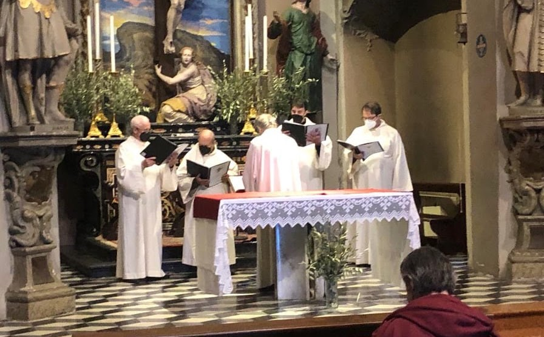
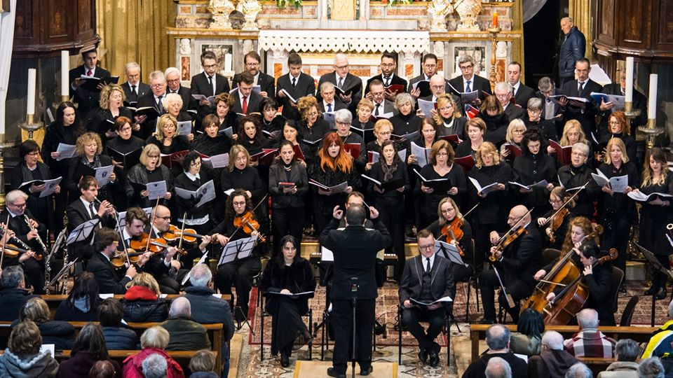

Le formazioni
Le formazioni
Dal canto gregoriano all'orchestra da camera: ogni formazione custodisce un repertorio e una tradizione propri, che si incontrano nell'attività d'insieme al Sacro Monte Calvario.

Coro polifonico
Corale di Calice

Ensemble vocale
Il Convivio Rinascimentale

Canto gregoriano
Schola Gregoriana

Orchestra da camera
Camerata Strumentale di S. Quirico
I concerti in programma
I prossimi appuntamenti della stagione concertistica al Sacro Monte Calvario.